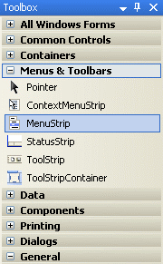
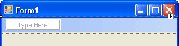
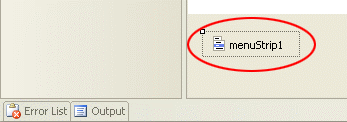
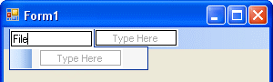
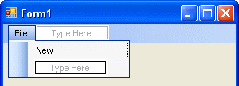
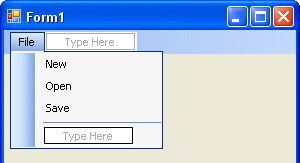
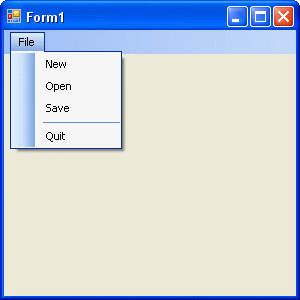

Adding Menus to a Visual Basic .NET Form
In this section we’ll see how to add menus to a Visual Basic .NET form. These type of menus are very common to Windows programme. Visual Basic itself has many of these drop down menus - File, Edit, View, Project, Format, etc. And they’re very easy to add.
Start a new project. To your new form, use the toolbox to add a MenuStrip control:

Double click the control to add one to your form. When you do, you'll notice two things. At the top of your form, you'll see this:

We'll see how to construct our menu soon. But notice the other things that gets added to your project. Examine the bottom of your screen, on the left. You'll see this:

This is the control itself. If you click on this (it's highlighted above), you'll see that the Properties box on the right changes. There are many properties for the control. But there are lots of properties for the MenuItem object. The MenuItem object is the one at the top of the form - The one that says Type Here.
To start building your menu, click inside the area that says "Type Here". Type the word File:

Now press the enter key on your keyboard. Your menu will look like this:

To create items on your File menu, click inside the Type Here box. Enter the word New, and press the enter key on your keyboard again. Your menu will then look like this:

Add an "Open" and a "Save" item to your menu in the same way. It should look like this:

The final item we'll add to our menu is an "Exit" item. But you can add a separator between the "Save" and "Exit".
To add a separator, click inside the blue "Type Here" box. Instead of typing a letter, type the minus character "-" (in between the "0" key and the "+/=" key on your keyboard). When you hit your return key, you'll see the separator appear:

Click inside the "Type Here" area, and add an Exit (or Quit) item. Click back on your form, away from the menu, to finish off. You should now have a File menu like this one:

To see what your menu look like, Run your programme. Click the File menu. We haven't added any code to the menu yet, so nothing will happen if you click an item on the menu. But it does look quite good. Very professional!
In the next part, we'll see how to add some code to the Quit menu.